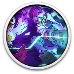

 Duck Paradox
Details
 |
|
| Playtime | Not Played |
| Last Activity | Never |
| Added | 13/11/2024 2:13:42 |
| Modified | 18/05/2025 1:06:21 |
| Completion Status | Not Played |
| Library | Gog |
| Source | GOG |
| Platform | PC (Windows) |
| Release Date | 09/10/2024 |
| Community Score | 87 |
| Critic Score | 70 |
| User Score | |
| Genre | Adventure Indie |
| Developer | Magic Games |
| Publisher | Midwest Games |
| Feature | Single Player |
| Links | Steam Twitch GOG |
| Tag | 2D Action Adventure Bullet Hell Difficult Female Protagonist Indie Pixel Graphics Platformer Puzzle Retro Roguelike Science Sci-fi Surreal Time Manipulation |
Description

ENTER THE PARADOX
Navigate the infinite domains of the multiverse as savvy scientist Dr. Paraducks in search of her pet duck, lost in the throes of space-time thanks to a malfunctioning time machine. Trapped in a world of endless possibilities, Dr. Paraducks continues to battle corrupted versions of her beloved pet despite the unrelenting reality and her declining sanity. But who knows what is real anymore? For her, there is no choice but to keep fighting. Tackle difficult-to-master trials, run after run, with the utmost quickness to earn powerful upgrades, save all of the ducks, and grasp the tattered threads of reality.

BEWARE OF THE DUCKS
Armed with a trusty ray gun and a can-do quackitude, face dangerous worlds teeming with corrupted imposters. Leap across perilous platforms, unleashing waves of bouncing bullets on swarms of feathered foes. Each ray gun blast offers a deadly risk: each miss ricochets off of walls, adding to Dr. Paraducks’ list of troubles. Aim and shoot strategically while dodging lethal hazards and pixelated pits of death. Aim and shoot strategically while dodging lethal hazards, big-beaked bosses, and pixelated pits of death.

OUTSMART THE FLOCK
Slow down time for some breathing room while solving puzzles and engaging barricades. Procure lifesaving shield bubbles before setting up explosive traps to zap duck doppelgangers while corralling your duck to safety. Select between two randomized upgrades at the end of each level, experimenting with new builds with every reset. Pet enthusiasts will need to keep a level head through more than 30 increasingly difficult levels or unlock and test their resolve in the endless Survival mode. Keep a level head through more than 50 increasingly difficult levels or test your resolve in the endless Survival mode.

FEATURES
- Over 50 increasingly difficult levels across three visually distinct worlds: Lab Dimension, Disco Dimension and Duckwash Dimension.
- Gameplay offers unique challenges around precision platforming, strategic shooting, solving puzzles and earning upgrades.
- An endless Survival mode and built-in timer for those who seek the utmost challenges. Bonus, if you can unlock the hidden Impossible Mode!
- Select between two randomized upgrades at the end of each level, experimenting with new builds with every reset.